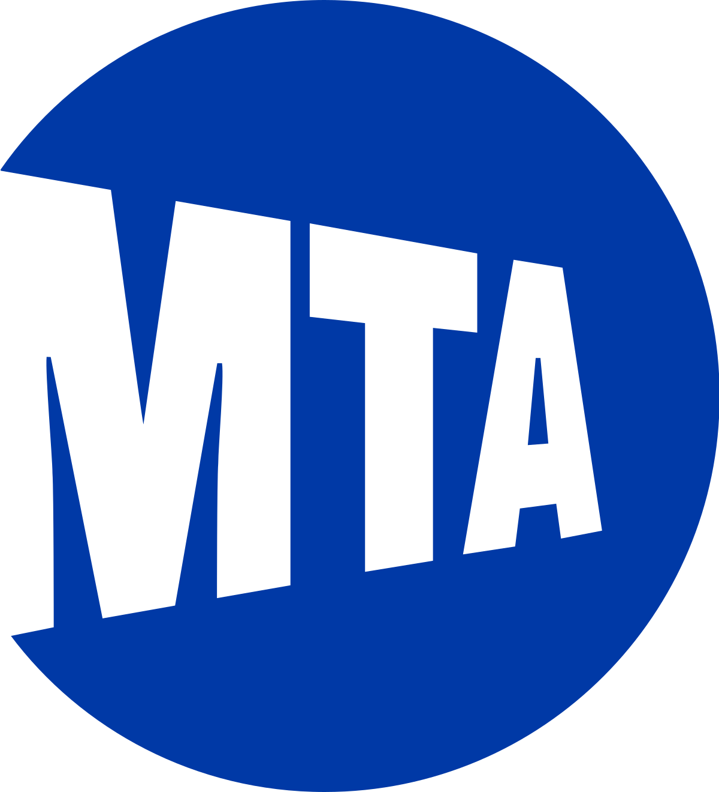
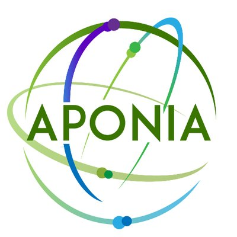
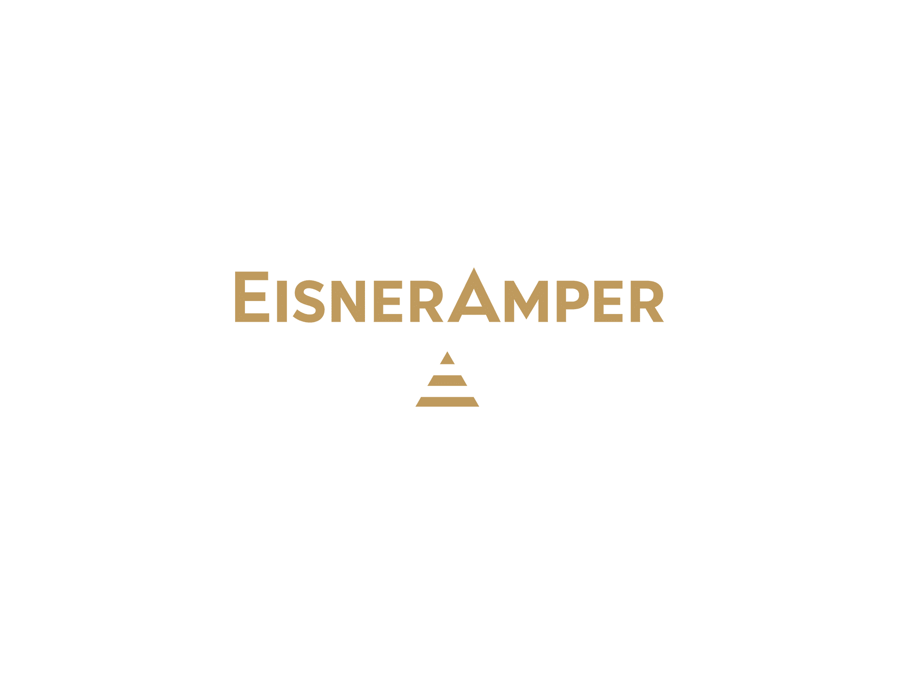
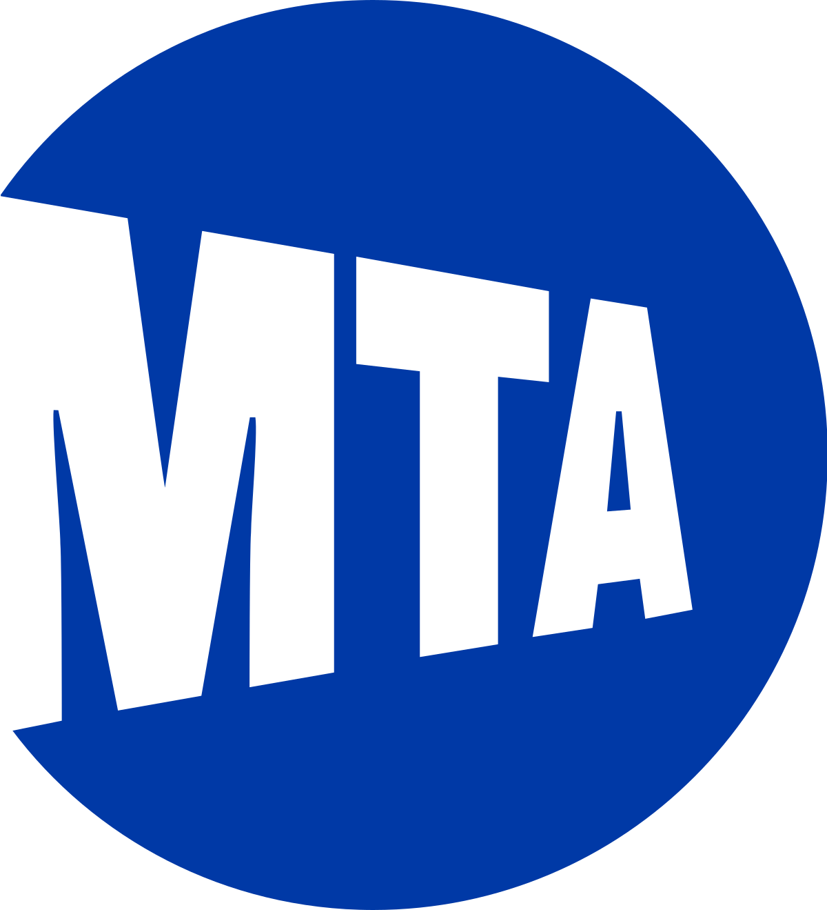
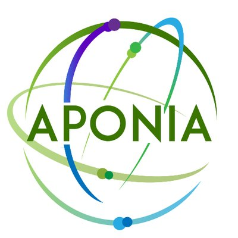
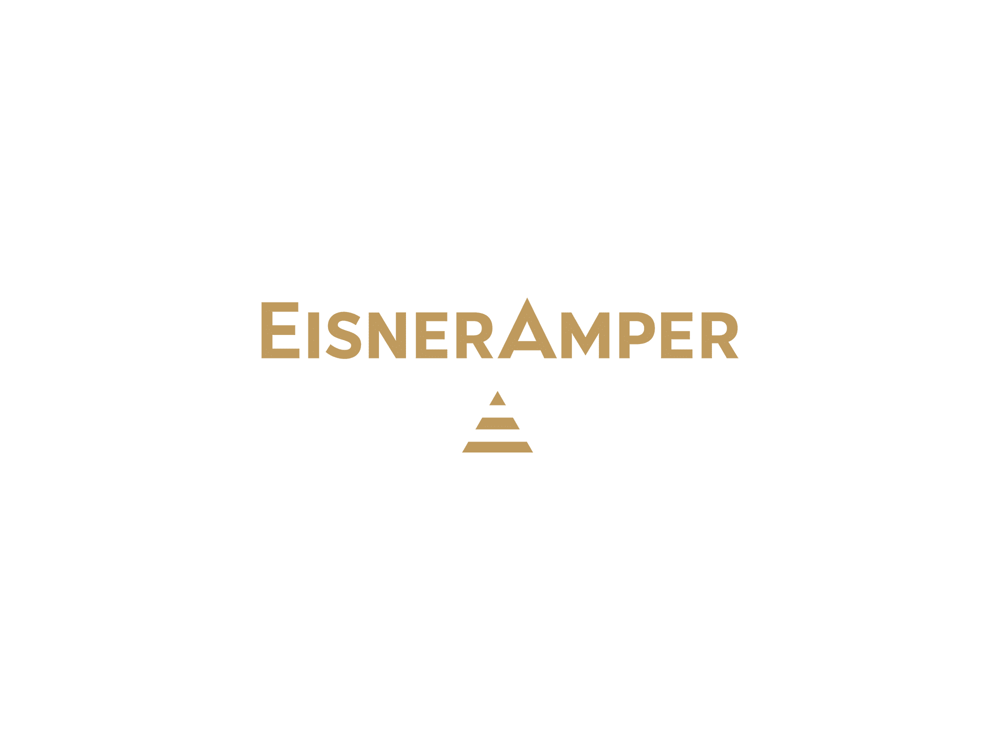
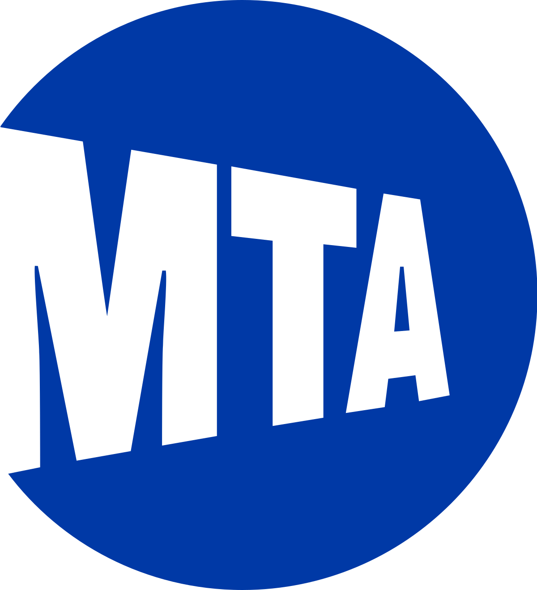
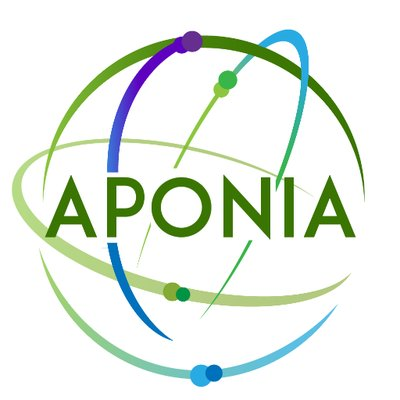
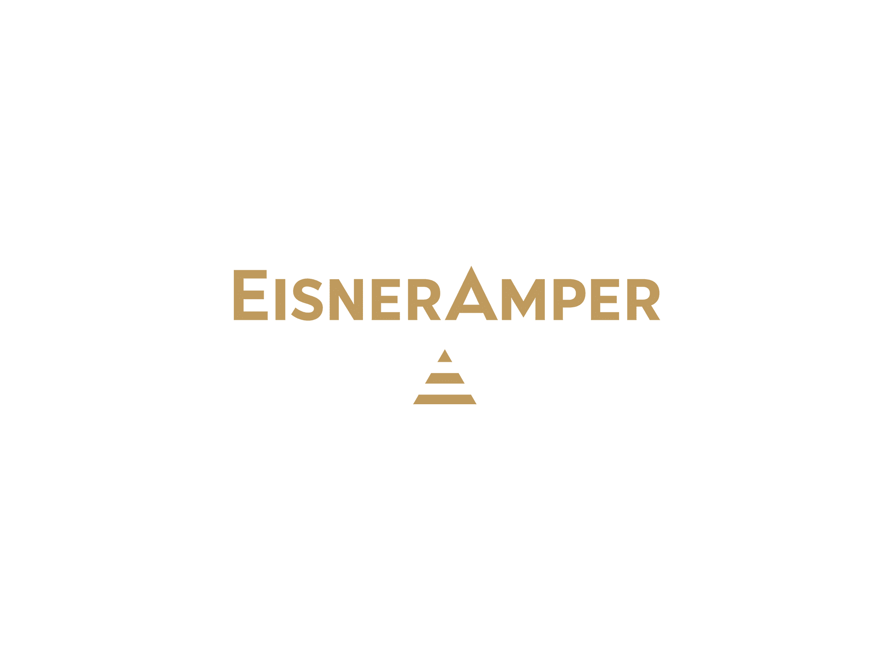

Cilck on the logo to visit the company's main website.
Research Foundation of CUNY
Selected (10%) to work with NYC Mayor Eric Adams’ IT team on G2C digital transformation with city-wide impact
Designed stratified UI/UX studies across 5 NYC boroughs; benchmarked 8 vendors and prototypes using DVF method
Consolidated Excel data for 20+ Queens nonprofits for NYC Speaks and identified possible partnership
MTA
Analyzed MTA ridership and accident data using Python and Excel and visualized spatial heat map in Tableau
Proposed a 180-day blueprint for database consolidations across 7 MTA agencies and reduced 5+ risks.
Summarized reports and presented MTA public relationship analysis to 10+ senior executives and CTO at MTA
Aponia Data Solutions
Improved contract classification efficiency by analyzing text data from ~5M law clauses in 20+ categories
Queried data in PostgreSQL and built NLP contract processing pipelines in Python with text cleaning and embedding
Developed classification models (e.g. logistic regression, random forest, SVM) in Python and evaluated performances with confusion matrices and ROC; achieved ~95% accuracy
Communicated business goals, success metrics, and model performances with stakeholders
EisnerAmper
Extracted financial statements (10K, 10Q) from SEC Filings, converted XBRL documents to JSON format, and visualized trends in revenues, net income, and earnings per share using Python
 




